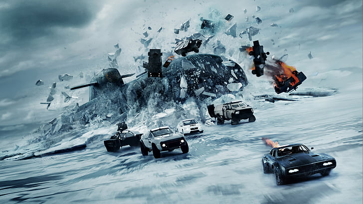

Velozes e Furiosos 8
Depois da aposentadoria de Brian e Mia, Dom e Letty aproveitam a lua de mel e levam uma vida pacata e normal. Mas a adrenalina do passado volta com tudo quando uma mulher misteriosa obriga Dom a retornar ao mundo do crime e da velocidade.É diante deste cenário, portanto, que Velozes e Furiosos 8 chega às telas, com as expectativas mais altas do que nunca, e sem o apelo emocional da ausência de um dos seus principais astros para se apoiar. O mais surpreendente, no entanto, é que ao invés de se preocuparem com isso, os envolvidos apostaram de vez no “mais e melhor”, e entregam um dos capítulos mais divertidos de toda a saga